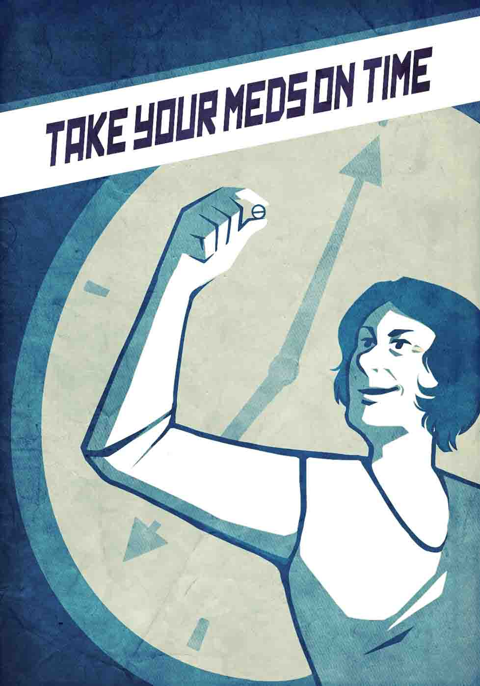

Patients who stick to their medications have better outcomes. If you quit early, your health suffers.
All prescriptions have a medical purpose: to maintain or restore your health, reduce pain, or help you heal.
Part of your job is to follow the plan of care, so find a method that helps you take your meds on time.
A problem taking or paying for medication is not a sufficient reason to outright quit taking them. Talk to your doctor, nurse, or clinic staff for help.
